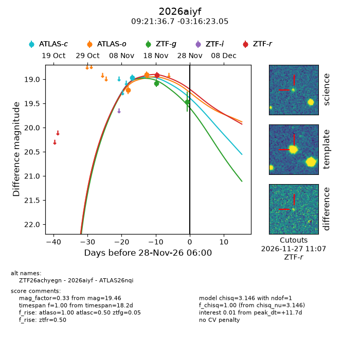
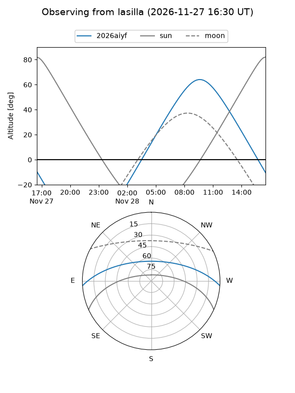
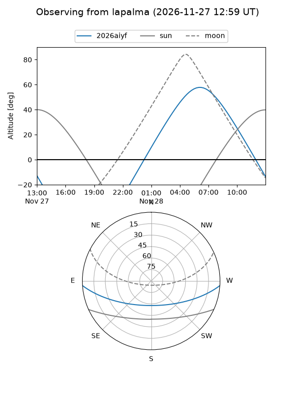
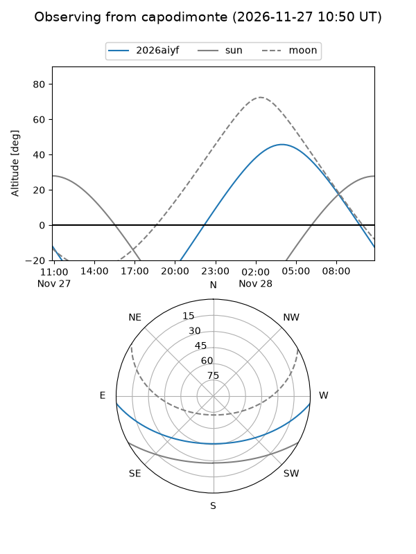
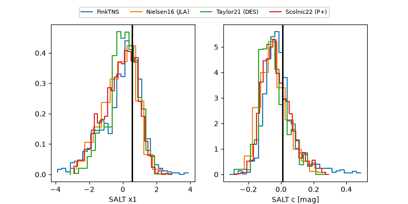

2026aiyf
Target 2026aiyf at 2026-11-28 06:02
Aliases and brokers:
FINK-ZTF: ztf.fink-portal.org/ZTF26achyegn
Lasair-ZTF: lasair-ztf.lsst.ac.uk/objects/ZTF26achyegn
ALeRCE-ZTF: alerce.online/object/ZTF26achyegn
YSE-PZ: ziggy.ucolick.org/yse/transient_detail/2026aiyf
TNS name: wis-tns.org/object/2026aiyf
Direct TNS query: direct search
alt names
ZTF26achyegn (ztf,fink_ztf)
2026aiyf (tns,yse)
ATLAS26nqi (atlas)
Coordinates:
equatorial (ra, dec) = 140.4029,-3.27307
equatorial (HMS+DMS) = 09:21:36.68,-03:16:23.05
galactic (l, b) = (235.4522,+31.02459)
Flags:
peak dt: +11.7
Photometry:
last atlasc=18.97, atlaso=18.91, ztfg=19.46, ztfr=18.92
1 atlasc, 2 atlaso, 2 ztfg, 1 ztfr detections
Lightcurve

Visibility



Additional plots
